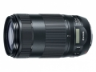

器材库 > 35mm画幅AF变焦镜头 > EF 70-300/4-5.6 IS II USM

详细规格
镜头类型
远摄变焦镜头
发布日期
2016-09-15
厂家推荐价格
72,000.00 （日元）
焦距
70mm-300mm
最大光圈
f/4-5.6
最小光圈
f/32-45
视角（对角）
34° - 8°15
视角（水平）
29° - 6°50
视角（垂直）
19°30 - 4°35
镜头结构
17片/12组
低/超低色散镜片
1片
光圈叶片
9片
最近对焦距离
120cm
最大放大倍率
0.25倍
驱动马达
NANO USM超声波马达
滤镜口径
67mm
镜头卡口
Canon EF
防抖
是
颜色
黑色
尺寸
80×145.5mm
重量
710g
附件
遮光罩 ET-74B（需另外购买）
备注
全时手动对焦
teda1232018-07-25 22:224.83 分
操作性 5.00耐用性 4.50性价比 5.00解像力 5.00色彩还原 5.00机械结构 4.50
产品图 / 样片
EF 70-300/4-5.6 IS II USM